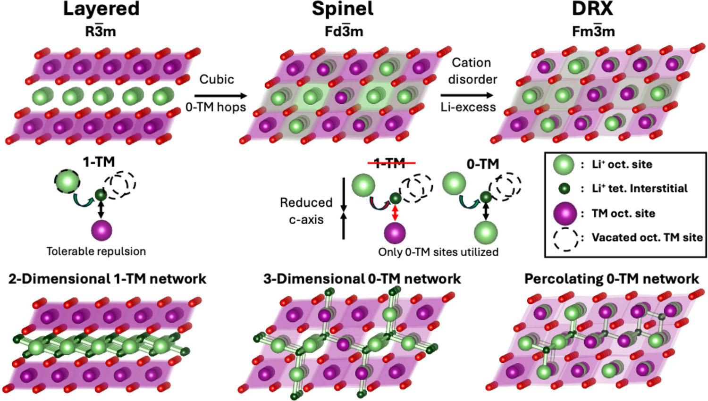

How does lithium get through a cathode whose metals are arranged at random?
Why this paper
Most lithium-ion cathodes are ordered oxides built on nickel and cobalt, metals whose supply is concentrated in a few countries. Disordered rocksalts (DRX) can be made from Earth-abundant metals such as manganese. Hau et al., Adv. Mater. 2025, review what makes them work.
The puzzle
Charging and discharging means lithium hopping from site to site through the solid. Ordered cathodes have built-in lanes. In DRX the metals sit at random, so a hop is easy only where few metal atoms crowd its doorway, and lithium crosses the crystal only if enough easy hops link up. Extra lithium makes that more likely.
Reading Figure 1
Three columns, three ways to arrange the same atoms: layered, spinel and DRX. The top row shows each crystal, the middle row a single lithium hop and the metals beside it, the bottom row the network those hops form. Green is lithium, purple a transition metal such as manganese, and a dashed circle an empty site.
Hau et al. 2025 · Figure 1

Figure 1. Overview of DRX and ordered rocksalt structures and their diffusion mechanisms. Diffusion networks of layered, spinel, and DRX ordering on the same rocksalt framework. Reproduced unchanged under the Creative Commons Attribution License.
One octahedron of this crystal will lift off the figure into this space
This view needs WebGL, and the 3D library did not start. Try reloading, or open the page in a browser with hardware graphics enabled.
In the paper’s words
One figure Four ideas at once
The review sums up how lithium moves through three cathode families in a single image. It is dense: each row is a different idea, and it assumes you already know them. This page takes the figure apart and rebuilds it in 3D, one idea per step.
“Li in layered structures migrate between octahedral sites via an intermediate tetrahedral site (o-t-o diffusion) through a di-vacancy mechanism. The migration barrier of this hop is determined by the number of TM that face-share with the intermediate tetrahedral sites.”
Read the full passage
“The comparison of crystal structures and Li transport mechanism is summarized in Figure 1. In layered cathodes (R-3m), oxygen occupies the FCC lattice, and the cations (Li and TM) occupy the octahedral sites, with the Li and TM octahedra order in alternating (111) planes. Li in layered structures migrate between octahedral sites via an intermediate tetrahedral site (o-t-o diffusion) through a di-vacancy mechanism,[5,8,21,22] The migration barrier of this hop is determined by the number of TM that face-share with the intermediate tetrahedral sites. In the ordered layered structure, only 1-TM (1 TM and 3 Li face-share with the tetrahedral site) and 3-TM (3 TM and 1 Li face-share with the tetrahedral site) environments are present, but the 1-TM channels form a 2-D percolation network. With a typical slab distance of 2.6–2.7 Å, the migration barrier is below 500 meV for layered structures.[8] Spinel structures (Fd-3m) present an ideal cation ordering in FCC framework, as the TM occupy on the 16d octahedral sites creates 0-TM, 2-TM, and 4-TM environments.[23] The intrinsic 0-TM tetrahedra provides low barrier 3-D percolation channels in spinel structures, making spinel a high-rate cathode materials. With the same FCC framework, DRX (Fm-3m) has no long-range cation ordering, creating all possible tetrahedral sites with 0-TM, 1-TM, 2-TM, 3-TM, and 4-TM as face-sharing neighbors.[5–8]
Similar to layered structures, where Li migrates through a di-vacancy mechanism, the migration energy depends on the number of TMs present in the octahedra that face-share with the tetrahedral site. Among these, only 0-TM and 1-TM are considered active, as the other tetrahedral sites have too strong an electrostatic repulsion between Li and face-sharing TM for Li ions to migrate through them. Therefore, a percolating network of octahedral sites linked by 0-TM and 1-TM channels is required for Li to diffuse through DRX.[24]”
Section 1, Introduction, pp. 2–3. Reference numbers are the paper’s own.
Figure 1 is reproduced unchanged from H.-M. Hau et al., “Disordered Rocksalts as High-Energy and Earth-Abundant Li-Ion Cathodes,” Advanced Materials 37 (2025), 2502766, under the Creative Commons Attribution License. doi.org/10.1002/adma.202502766
1One hop
Paper companion · Hau et al. 2025 · Adv. Mater.
1One hop1 of 3
All three cathode families stand on one oxygen frame
Oxygen ions (red) fill one grid; metal ions fill a second grid that interlocks with it, the arrangement of table salt. Each metal site is wrapped by six oxygens, an octahedron. Layered, spinel and DRX cathodes differ only in which metal sits on which octahedral site.
Show
In the paper · Figure 1; p. 2
1One hop2 of 3
Between the octahedra sit smaller holes: the tetrahedral sites
Each is surrounded by only four oxygens. They are normally empty, but they are the doorway lithium uses to move. Each of a tetrahedron’s four faces is also a face of the octahedron around one of four metal sites, and those four sites are what the paper counts next.
Show
In the paper · p. 2
1One hop3 of 3
Lithium crosses from one octahedron to the next through an empty tetrahedron
It cannot jump straight across. It leaves its octahedron through a triangular window of three oxygens, passes the tetrahedral site, and leaves through a second window into the empty octahedron next door. The paper calls this o–t–o diffusion.
Position along the path, not time.
In the paper · p. 2
2The doorway1 of 3
But the metals around that doorway decide whether it is open
At the tetrahedral site, lithium is close to all four corners, and a transition metal (TM) on a corner pushes on it. So each tetrahedron is named by how many corners hold a TM. The paper counts only 0-TM and 1-TM tetrahedra as active.
TM on its four corners
In the paper · p. 2
2The doorway2 of 3
Layered oxides keep a taller lithium slab around the same doorway
The same 1-TM tetrahedron twice: in LiCoO₂ as measured, and in the same layers on the ideal cubic frame of spinel and DRX. The measured Li slab is 2.60 Å against 2.30 Å. The review ties a tolerable 1-TM hop in layered oxides to a slab of 2.6–2.7 Å.
Show in Figure 1
In the paper · p. 2 · cell: COD 1550397
2The doorway3 of 3
A hop also needs an empty site to land in, ideally with a second beside it
A hop goes most easily when another corner of the same tetrahedron is also empty: two neighbouring empty sites, a divacancy. A Li left on that corner crowds the doorway too. The paper describes Li migration in layered cathodes and DRX as divacancy hops; comparing one empty corner with two is schematic here.
Compare
In the paper · p. 2
3Orderings1 of 4
One open doorway is not enough: they have to link across the particle
Lithium travels from deep inside a particle to its surface, hop after hop. This grid has no chemistry: each dot is open or blocked, and neighbouring open dots join into islands. Only an island that reaches across lets something through. On this square grid the switch comes near 59% open.
A teaching grid with no chemistry.
A teaching model · no panel in Figure 1
3Orderings2 of 4
So how the metals are ordered decides which networks form
Layered first. In cathodes such as NMC and LiCoO₂ the metals sort into flat sheets: a plane of TM, then a plane of Li. The review: only 1-TM and 3-TM environments exist, and the 1-TM channels form a 2-D percolating network. This crystal is drawn from the measured LiCoO₂ cell.
Build up the picture
In the paper · p. 2
3Orderings3 of 4
Spinel builds 0-TM doorways into its pattern, connected in three dimensions
Spinel keeps the same frame but orders the metals in a 3-D pattern. Shown is lithiated spinel, Li₂M₂O₄, the state Figure 1 draws: TM on one set of octahedral sites, Li on the other. The review: its 0-TM tetrahedra give low-barrier 3-D percolation channels.
Build up the picture
In the paper · p. 2; p. 12
3Orderings4 of 4
Disordered rocksalt: every environment turns up, at random
In DRX each metal site holds Li or TM by chance, so every tetrahedron type turns up, 0-TM to 4-TM. Figure 1 keeps only 0-TM hops for spinel and DRX; the text also counts 1-TM hops as active. The 0-TM doorways are scattered. Do they link across the particle?
Build up the picture
In the paper · p. 2
4Extra lithium1 of 2
A random cathode needs extra lithium before its doorways connect across the crystal
Only 0-TM doorways reliably carry lithium in DRX, and they sit at random. Monte Carlo simulations quoted by the review put the threshold for a 0-TM network that spans the crystal at about 9% Li excess; 10–20% is typical in practice.
This model: one random crystal, connected if its network crosses it along x.
Connected is not fast: site-energy disorder can slow lithium 10–100 times (p. 3), not modelled here.
In the paper · p. 3
4Extra lithium2 of 2
Real particles: smaller ones need less, and order matters
The 9% figure is for perfectly random cations. Lithium only has to reach the nearest surface, so nano-sized DRX can work with less Li excess. Most short-range order found in DRX tends to reduce 0-TM percolation; this page does not model it, and every crystal here is fully random.